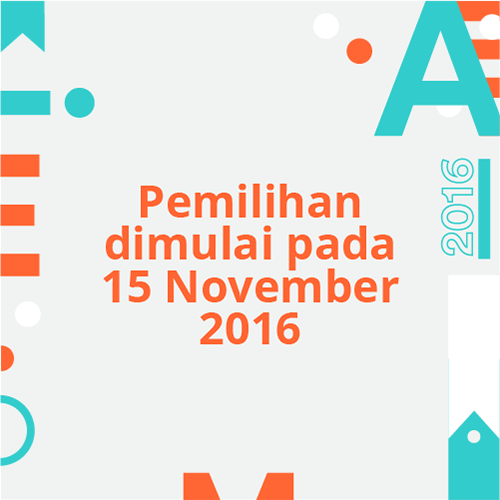
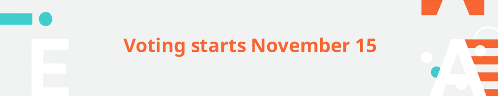

Dukung Toko E-Commerce Favorit Anda

Anda sering belanja online? Apakah Anda menggemari situs belanja online tertentu? Ataukah hanya sebagai pembeli online pada umumnya?
Jika Anda menjawab ‘Ya’ pada salah satu pertanyaan di atas, maka kami mengajak Anda untuk ikut serta menentukan pemenang dalam ajang pemilihan bergengsi iPriceE-Commerce Merchant Awards (iEMA) 2016. Dukung toko online favorit Anda dan Anda bisa meraih kesempatan untuk menjadi salah satu dari 3 pemenang beruntung untuk mendapatkan Smartphone Samsung keluaran baru! iEMA diselenggarakan atas kerjasama dengan eTail Asia dan Trusted Company dan iPrice Group membantu Anda, para konsumen untuk memilih dan menentukan toko online terbaik di Asia Tenggara!
Dukung Toko E-Commerce Favorit dengan TIGA Langkah Mudah:
- Pilih toko e-commerce Favorit Anda.
- Beri penilaian pada toko online favorit Anda dan bagikan pengalaman Anda saat berbelanja dengan kalimat singkat.
- Lakukan pemilihan dengan menggunakan akun Facebook atau akun Google.
Satu orang hanya boleh memilih satu kali. Jadi, pilihlah dengan bijak dan raihlah kesempatan mendapatkan Smartphone Samsung keluaran baru! Pemilihan dimulai pada tanggal
15 November 2016 dan berakhir pada 31 Januari 2017. Baca lebih lanjut tentang iEMA 2016 atau cek persyaratannya.
15 November 2016 dan berakhir pada 31 Januari 2017. Baca lebih lanjut tentang iEMA 2016 atau cek persyaratannya.
Tentang iEMA 2016
Mengenali dan menjunjung tinggi sektor e-commerce, iPrice E-Commerce Merchants Awards (iEMA) 2016 merupakan penganugerahan penghargaan terbaik di Asia Tenggara yang dipilih berdasarkan pada jumlah suara pemilih konsumen online. Penghargaan ini diselenggarakan atas kerjasama eTail Asia dan Trusted Company .
Para finalis dan para pemenang penghargaan ini dipilih berdasarkan para konsumen dengan tiga langkah mudah:
Semua pemilih akan juga berkesempatan memenangkan Smartphone Samsung keluaran baru. Tiga pemenang beruntung akan dipilih dan diumumkan pada
8 Maret 2017 bersamaan dengan para pemenang iEMA. Baca selengkapnya tentang syarat dan ketentuan.
- Mereka memilih toko e-commerce favorit mereka
- Mereka memberikan penilaian terhadap toko online favorit serta membagi pengalmannya dalam kalimat singkat
- Mereka melakukan pemilihan melalui akun Facebook dan akun Google
- Toko online dengan jumlah pemilih terbanyak akan memenangkan penghargaan “Toko E-Commerce Terpopuler di Tahun 2016”
- Toko online dengan rata-rata ranking tertinggi akan memenangkan penghargaan “Toko Online dengan Kualitas Terbaik di Tahun 2016”
Semua pemilih akan juga berkesempatan memenangkan Smartphone Samsung keluaran baru. Tiga pemenang beruntung akan dipilih dan diumumkan pada
8 Maret 2017 bersamaan dengan para pemenang iEMA. Baca selengkapnya tentang syarat dan ketentuan.
Contact us
LocationiPrice Group Sdn Bhd
Unit A-22-1, 22nd Floor
Northpoint Offices Suites
Mid Valley City,
No. 1, Medan Syed Putra
59200 Kuala Lumpur, Malaysia
Syarat dan Ketentuan
E-Commerce Merchant Awards Tahun 2016
-
General:
- iPrice E-commerce Merchant Awards (“iEMA”) 2016 diselenggarakan oleh iPrice Group Sdn Bhd (‘iPrice”).
-
Keikutsertaan:
- iEMA 2016 terbuka untuk semua toko online di Asia Tenggara (Malaysia, Singapura, Indonesia, Vietnam, Thailand, Filipina) dan Hong Kong.
-
Proses Pemilihan / Voting:
- Voting / pemungutan suara perlu dilakukan dengan mengisi formulir yang dapat diakses di (“iprice.co.id/iEMA/2016”).
- Para pelanggan dapat memberikan dukungan / voting untuk toko e-commerce pilihannya mulai dari 15 November 2016 hingga 31 Januari 2017 (“Voting Duration”), dan setiap pelanggan hanya bisa memberikan dukungannya satu kali.
- Para pemilih wajib memvalidasi dukungannya melalui akun Facebook dan akun Googlenya.
- Jika pemilihan dilakukan di luar waktu yang ditentukan, maka perhitungan tidak sah.
- iPrice tidak menanggung biaya, kerusakan, serta kekurangan terhadap apapun yang merujuk atas diselenggarakannya iEMA.
- Perhitungan suara akan dilakukan setelah berakhirnya durasi pemungutan suara (awal Februari 2017).
- iPrice akan memilih para pemenang dan finalis penghargaan untuk kategori:
- Popularitas: toko e-commerce dengan jumlah hasil suara tertinggi dengan rating minimum 3 dari 5.
- Kualitas: toko e-commerce dengan rata-rata rating tertinggi.
- Para pemenang dan finalis akan dipilih untuk setiap negara dengan masing-masing kategori.
- iPrice memiliki hak mutlak secara bijaksana untuk me-review, mengubah proses pemilihan atau menarik kembali penghargaan kapanpun tanpa pemberitahuan sebelumnya dengan tanpa mengurangi rasa hormat. Keputusan iprice adalah mutlak dan tidak dapat diganggu gugat.
-
Pengumuman:
- Para pemenang dan finalis dari penghargaan ini akan diumumkan pada upacara penghargaan eTail Asia 2017 di Marina Bay, Singapura, pada tanggal 8 dan 9 Maret 2017.
- Para pemenang akan diumumkan via email serta pada Microsite iEMA.
- Sertifikat digital dan e-lencana akan diberikan kepada semua pemenang dan finalis iEMA, serta para pemenang dan finalis diminta untuk menampilkannya pada aset online mereka (website) dengan tanpa biaya dan kondisi yang sama (termasuk lencana “Didukung oleh iPrice” yang harus disertai dengan link yang dapat di akses ke halaman website iPrice) harus digunakan dengan desain, tampilan, dan promosi yang sama oleh iPrice dengan tanpa modifikasi, perubahan dalam bentuk apapun.
- iPrice mengizinkan para pemenang dan finalis untuk menggunakan lencana “sebagaimana adanya” dengan tanpa jaminan dan tidak bertanggungjawab atas segala biaya pada instalasi lencana pada website mereka.
- Para pemenang dan finalis menyetujui atas penggunaan nama perusahaan mereka dan atau logo di setiap materi publikasi dan berpartisipasi di setiap aktivitass promosi yang berkaitan dengan iEMA.
- iPrice tidak bertanggungjawab dan tidak memberikan asuransi ataupun jaminan terkait keaslian dan kredibilitas dari para pemenang dan para finalis iEMA, ataupun kualitas serta kesesuaian atas berbagai tujuan kepentingan dan sebagainya.
-
Undian
- Semua pemilih yang valid dan memenuhi kualifikasi akan berkesempatan untuk mengikuti undian untuk memenangkan Smartphone Samsung.
- Hanya tiga pemenang beruntung yang akan dipilih dari semua pemilih pada iEMA 2016 dan seluruh toko online yang terpilih untuk iPrice Special Award.
- Para pemenang akan diumumkan bersamaan dengan para pemenang iEMA pada 8 Maret 2017 di microsite iprice.co.id/iEMA/2016/
-
Lain-lain
- Semua persyaratan dan ketentuan akan berdasarkan pada hukum dan ketentuan di Malaysia dan setiap perselisihan terkait akan diproses melalui pengadilan Malaysia.
Syarat dan Ketentuan
iPrice Special Award Year 2016
-
Umum:
- iPrice Special Award 2016 diadakan oleh iPrice Group Sdn Bhd (“iPrice”).
-
Kelayakan Kriteria dan Registrasi:
- iPrice Special Award 2016 terbuka untuk semua merchant e-commerce di wilayah Asia Tenggara (Malaysia, Singapura, Indonesia, Vietnam, Thailand, Hong Kong dan Filipina).
- Setiap individu, baik pemilik merchant/staf atau pihak ketiga, bisa mendaftarkan merchant (satu atau lebih) dengan mengisi dan menyerahkan segala informasi yang diperlukan dalam formulir online (nama merchant/perusahaan, website dan alasan mengapa merchant tersebut layak dan berhak memenangkan iPrice Award).
- Nominasi iPrice Special Award 2016 dapat diserahkan ke iprice.co.id/iEMA/2016/ antara 15 November 2016 – 31 Januari 2017 (“Periode Kontes”).
-
Penyerahan Formulir:
- Individu (baik pemilik merchant/staf atau pihak ketiga) yang mengirimkan formulir diwajibkan untuk
- apa yang membuat perusahaan/bisnis tersebut spesial
- keuntungan yang didapat pelanggan/industri e-commerce dari merchant/bisnis tersebut
- deskripsi mengenai projek spesial yang dijalankan oleh toko/bisnis dalam membantu organisasi sosial atau non-profit
- Semua keikutsertaan harus diserahkan secara online ke iprice.co.id/iEMA/2016/ beserta dengan formulir penyertaan dalam kurun Periode Kontes.
- Keikutsertaan yang diterima di luar periode kontes tidak akan dilayani atau diterima.
- iPrice tidak bertanggungjawab atas segala keterlambatan atau kegagalan dalam penerimaan keikutsertaan untuk alasan apapun.
- iPrice tidak bertanggungjawab atas segala biaya, kerusakan atau kewajiban yang muncul dari atau berhubungan dengan iPrice award.
- Kolom ‘email’ tidak diharuskan untuk diisi (baik oleh pemilih merchant/staf atau pihak ketiga) saat menyerahkan formulir keikutsertaan. Namun mengosongkan kolom ini akan mendiskualifikasi individual dari lucky draw untuk smartphone Samsung.
-
menulis sebuah cerita menarik/alasan tidak lebih dari 1.500 kata berdasarkan:
-
Penilaian:
- Seluruh keikutsertaan yang diterima di akhir Periode Kontes akan dievaluasi oleh panel juri yang ditunjuk oleh iPrice.
- Para juri akan membuat daftar 10 finalis dan satu pemenang dari semua finalis.
- iPrice berhak atas kebijaksanaan mutlak untuk meninjau dan mengubah proses atau untuk menarik penghargaan sewaktu-waktu tanpa pemberitahuan terlebih dahulu dan tanpa dipertanggungjawabkan dalam hal tersebut. Keputusan dari iPrice adalah final dan konklusif dalam segala situasi.
-
Pengumuman:
- Para pemenang dan finalis iPrice Special Award akan diumumkan pada upacara penghargaan eTail Asia 2017’s di Singapura, Marina Bay pada 8 dan 9 Maret 2017.
- Para pemenang akan dinotifikasi lewat email dan pada iEMA microsite.
- Sebuah sertifikat digital dan sebuah e-badge akan dianugerahkan kepada para pemenang dan finalis iPrice Special Award, dengan himbauan untuk menunjukkan keduanya pada aset online (website) mereka tanpa pungutan apapun dengan catatan sertifikat digital dan e-badge (beserta “Powered by iPrice” badge yang harus dikonfigurasi sebagai link aktif yang kembali kepada halaman website iPrice) tersebut harus digunakan sesuai desain, display, maksud dan dipromosikan oleh iPrice tanpa modifikasi, distorsi atau pengubahan apapun.
- iPrice mengijinkan para pemenang dan finalis untuk menggunakan lencana “seperi apa adanya” tanpa jaminan apapun dan tidak bertanggung jawab atas biaya dan kewajiban yang timbul dari penggunaan atau pemasangan lencana pada website mereka.
- Para pemenang dan finalis setuju dalam penggunaan nama perusahaan dan/atau logo pada setiap publisitas dan untuk berpartisipasi dalam segala aktivitas promosional terkait dengan iEMA.
- iPrice tidak bertanggung jawab untuk, dan tidak memberi garansi sehubungan dengan autentisitas atau kredibilitas para pemenang dan finalis iPrice Special Award, begitu juga kualitas atau kesesuaian mereka untuk tujuan apapun dan sebaliknya.
-
Lucky Draw
- Individu yang menominasikan e-commerce merchant untuk iPrice Special Award dan menyertakan alamat email mereka pada kolom ‘email contact’ berhak mengikuti lucky draw untuk smartphone Samsung.
- Hanya tiga pemenang beruntung yang akan dipilih dari seluruh pengundi iEMA 2016 dan mereka yang menominasi merchant untuk iPrice Special Award.
- Para pemenang akan diumumkan bersamaan dengan para pemenang IEMA pada 8 Maret 2017 di microsite iprice.co.id/iEMA/2016/
-
Lain-lain
- Syarat dan ketentuan ini diatur berdasarkan hukum Malaysia dan setiap perselisihan akan tunduk pada yurisdiksi pengadilan Malaysia.
Nomination Form

Expert Panel

David Chmelar
Co-Founder and CEO of iPrice Bekerja sebagai konsultan manajemen dan banker di masa lalu, David membuat perubahan besar dan memutuskan untuk membangun iPrice Group, sebuah mesin pencarian untuk belanja online yang terkemuka di Asia Tenggara. Bersama Co-Fundernya yaitu Heinrich Wendel, mereka memiliki harapan yang tinggi untuk mengemukakan transparasi, kenyamanan, dan kepercayaan pasar Asia Tenggara secara utuh dan membuat masyarakat memilih belanja secara online.
Danny Levy
Conference Producer at Wordwide Business Research Memiliki latar belakang yang kuat dalam manajemen umum, penelitian, kerjasama yang strategis, pengembangan bisnis dan juga handal dalam membantu setiap bisnis agar mereka mendapatkan pesan yang jelas, ringkas dan akurat. Dengan pengalamannya yang luas dari berbagai sektor industri berbeda di Asia Tenggara, ia berhasil memimpin perusahaannya menjadi yang terunggul di kelasnya.
Frederick Krass
Co-Founder and Managing Director at Trusted Company Seorang ahli yang bergerak cepat dalam pemasaran e-commerce ke tingkat global. Dengan keahliannya, ia ingin agar perusahaannya melindungi para konsumen e-commerce dari segala penipuan online yang dilakukan melalui ulasan pihak ketiga yang ada dalam platformnya. Ia percaya bahwa setiap ulasan akan menambah nilai baik untuk jangka waktu lama jika mereka berada dalam platform pihak ke-3 yang dapat dipercaya.
Khailee Ng
Tech startup investor and founder. Managing Partner, 500 Startups Ia adalah seseorang yang suka menciptakan teknologi dalam startups dan bertanggung jawab dalam situs e-commerce Groupsmore serta perusahaan media Says.com. Ia juga merupakan mitra dari pengelola perusahaan modal yang paling aktif dan maju yaitu Silicon Valley yang menginvestasi lebih dari 100 startups di Asia Tenggara. Ia selalu mencari startups dengan pola yang berbeda-beda.Anh Nguyen
Head of Marketing, Google Vietnam Seorang “raksasa” dalam e-commerce yang mengembangkan karirnya dalam berbagai sektor di e-commerce. Saat ini ia menjabat sebagai Kepala Pemasaran Google Vietnam, sebelumnya ia adalah seorang Direktur untuk Zalora Vietnam. Pengalamannya bersama e-commerce dan Google memicu minatnya untuk mengeksplorasi tentang bagaimana inovasi digital dapat meningkatkan cara kita untuk hidup dan terus belajar.
Tim Marbach
CEO and Founder at Asia Venture Group Tim adalah seorang investor yang sukses dan aktif dalam berbagai startups di seluruh dunia. Perjalanannya menuju sukses dimulai saat ia menjalankan bisnis pertamanya yaitu Bonial (Kaufda). Setelah Bonial.com diakuisisi oleh media konglomerat Jerman yaitu Axel Springer SE pada tahun 2011, ia memutuskan pindah ke Asia Tenggara dan mendirikan Asia Venture Group, sebuah perusahaan investor yang menjadi malaikat untuk banyak startups, termasuk iPrice Group.Partners
iPrice Group
E-Commerce Aggregator and Price Comparison Website Southeast Asia is seen as the e-commerce haven, where new online stores are popping up every day. As such, shoppers are faced with more and more websites in their search for what they want and engage with retailers online. All this can get a little confusing.With this in mind, iPrice was set up to offer shoppers the widest selection of products and brands, provided by hundreds of partners in Southeast Asia – all made available on one shopping website. Founded since 2014, iPrice Group is present in seven major South East Asian countries.
Etail
E-Commerce & Multi-Channel Retail Innovators eTail Asia is a one-stop shop for everything multichannel and eCommerce; an event where business owners and entrepreneurs have opportunities to learn, be inspired, find innovative solutions for their businesses and build lasting professional relationships. Solely organized by eTail Asia, the annual conference aims to provide unrivalled networking opportunities, high quality content guided by research and experts conducted at top tier resorts.First organized by Worldwide Business Research LLC (WBR) in 1999, conference production company now runs over 80 industry conferences and networking events on a worldwide scale.Trusted Company
E-Commerce Review Platform Trusted Company is a review platform for e-commerce businesses in emerging markets like Southeast Asia and India. Trusted Company aims to be the most transparent go-to-place for company reviews, spiced up with a goal of educating both businesses and consumers in positive ways of facilitating good e-commerce practice.As the current state of emerging e-commerce in the South East Asia Region holds tremendous opportunities for solutions that tackle scam, fraud, and other types of abuse, Trusted Company strongly believes that creating trust through third-party verified reviews is the best manner to overcome these issue.Frequently Asked Questions
Untuk Pelanggan
Mengapa saya harus memilih?
Jika Anda sedang membaca ini, kemungkinan Anda telah menikmati kenyamanan berbelanja secara online. Dengan memilih dalam iPrice E-Commerce Awards 2016, Anda dapat memberikan dukungan kepada toko dan merchant e-commerce favorit Anda – serta berkesempatan untuk memenangi sebuah Smartphone Samsung!
Bagaimana saya bisa memilih?
Kunjungi website iEMA 2016 (insert link) dan Anda akan dapat memilih merchant e-commerce favorit Anda. Anda juga dapat menyertai iPrice Special Award.
Apa yang harus saya lakukan untuk mengikuti lucky draw smartphone Samsung?
Siapa pun yang mengirimkan penyertaan untuk iEMA 2016 layak untuk mengikuti lucky draw. Sementara itu untuk iPrice Special Award, Anda hanya layak jika mengisi kolom email ketika mengirimkan penyertaan.
Untuk Merchant E-Commerce
Bagaimana saya bisa mendaftarkan bisnis e-commerce saya untuk sesi pemilihan dan penilaian iEMA?
Semua bisnis dan merchant e-commerce yang sah dan legal secara otomatis akan terdaftar untuk penghargaan dengan kategori berikut:
Bisakah saya mengikuti iEMA jika saya bukan merchant yang bekerja sama dengan iPrice Group?
Ya. Anda tidak diharuskan untuk menjadi merchant yang bekerja sama dengan atau menjadi partner iPrice untuk mengikuti iEMA. Penghargaan tersebut terbuka untuk semua bisnis e-commerce di seluruh Asia Tenggara.
- The Most Popular E-Commerce Merchant of the Year 2016.
- The Highest Quality E-Commerce Merchant of the Year 2016.
Bisakah saya mengikuti iEMA jika saya bukan merchant yang bekerja sama dengan iPrice Group?
Ya. Anda tidak diharuskan untuk menjadi merchant yang bekerja sama dengan atau menjadi partner iPrice untuk mengikuti iEMA. Penghargaan tersebut terbuka untuk semua bisnis e-commerce di seluruh Asia Tenggara.
Kapankah periode pemilihan dan penilaiannya?
15 November 2016 hingga 31 Januari 2017.
Bolehkah saya menawarkan hadiah kepada pelanggan saya untuk memilih saya?
Kami menganjurkan Anda untuk menghimbau pelanggan Anda untuk mendukung Anda melalui media cetak, media sosial dan banner. Anda juga diperbolehkan untuk memberikan hadiah kepada pelanggan Anda seperti mengadakan lucky draw. Bagaimanapun, Anda tidak diperbolehkan untuk memanipulasi opini mereka mengenai pelayanan yang diberikan oleh Anda.
Berdasarkan apa para finalis dan pemenang dipilih?
- Dari setiap negara akan dipilih merchant dengan voting tertinggi untuk meraih penghargaan “The Most Popular E-Commerce Merchant of the Year 2016”.
- Dari setiap negara akan dipilih merchant dengan ranking tertinggi untuk meraih penghargaan “The Highest Quality E-Commerce Merchant of the Year 2016”.
Apa keuntungan mengikuti iEMA?
Para pemenang dan finalis akan menerima sertifikat digital dan sebuah e-badge (lencana online) yang dapat dipasang pada website e-commerce mereka. Para pemenang juga dapat menerima sebuah piala yang akan diserahkan pada konferensi eTail Asia di Singapura. Selama periode iEMA, iPrice akan memberikan liputan PR yang kuat untuk mendapatkan banyak publisitas, jika bisnis Anda menjadi salah satu pemenang atau finalis iEMA, bisnis Anda akan dicantumkan dalam press material dan kegiatan publisitas lainnya.
Apakah bisnis e-commerce saya dapat berpartisipasi dalam tiga (Most Popular Merchant, High Quality Merchant and iPrice Special Award) kategori?
Ya. Setelah menerima sebuah voting, Anda akan secara otomatis tercalonkan untuk Most Popular Merchant Award dan High Quality Merchant Award. Namun, penyertaan Anda untuk mengikuti iPrice Special Award hanya aktif ketika seseorang mencalonkan perusahaan Anda.
Kapan dan di mana finalis iEMA diumumkan?
Para pemenang dan finalis akan diumumkan pada upacara penghargaan eTail Asia 2017’s di Marina Bay, Singapura pada tanggal 8 dan 9 Maret 2017.
Di mana vote, review dan ranking akan ditampilkan serta disimpan?
Vote dan review akan disimpan secara aman dengan TrustedCompany.com. Data yang dikumpulkan akan disimpan dalam server yang senantiasa update dengan software terbaru untuk mencegah akses-akses illegal. Tidak akan ada ranking bisnis e-commerce yang ditampilkan pada website iEMA.
Bagaimana saya bisa yakin kalau reputasi bisnis saya tidak akan dibahayakan oleh iEMA 2016?
TrustedCompany.com akan mengumpulkan vote dan review selama iEMA 2016. Mereka memiliki tim khusus untuk memonitor semua vote dan review yang masuk, sehingga mencegah munculnya review palsu pada database mereka.
Apa yang terjadi jika nilai saya rendah pada iEMA?
Para peserta dihimbau untuk mempublikasi iEMA untuk mengumpulkan dukungan dari pelanggan-pelanggan setia mereka demi menjamim review yang diterima mencerminkan pengalaman pelanggan-pelanggan mereka. Bisnis e-commerce dengan ranking yang rendah tidak akan dipublikasikan dalam bentuk apapun.
Untuk Merchants
Tidak diwajibkan untuk registrasi sebelumnya to mengikuti iEMA 2016 karena seluruh toko online yang valid dan resmi (di kawasan Asia Tenggara) sudah memenuhi syarat.
Kami sangat menghimbau untuk berpartisipasi dan mengumpulkan banyak pendukung dari para penggemar dan pelanggan Anda untuk iEMA 2016! Di bawah ini merupakan beberapa materi yang dapat Anda unduh dan dapat Anda sebarkan di website dan aset media sosial Anda.
Selain itu, kami dapat membuat link khusus yang bisa Anda gunakan untuk mengarahkan konsumen Anda untuk dengan mudah memilih dan memberikan rating pada bisnis Anda untuk iEMA 2016. Silakan untuk email permintaan Anda ke award@ipricegroup.com dan perwakilan kami akan membantu Anda. Untuk informasi lebih lanjut mengenai iEMA 2016, silakan kunjungi laman pertanyaan di FAQ.